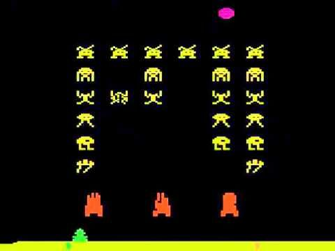

| Yu-Chen Lin | 705315195 |
| Jo-Chi Chuang | 005350427 |
| Adrian Hsu | 405331564 |
| Po-Chun Yang | 605297984 |
| Yu-Chi Lee | 705331666 |
Outer space is a place full of mystery and romance. Many people are attracted to the exploration of space. Inspired by SpaceX and NASA's successful astronaut launch recently, we would like to do a space game that can help craft automatically explore space with its own artificial life. In our project, we will adopt the classic Atari game space invader, where players use a craft to explore the space and defeat enemies in the space. In this project, we proposed a new DQN architecture called Attention DQN that combine the attention techniques with current DQN model. We also analyze Attention DQN and compare it with DQN, double DQN, and dueling DQN.
